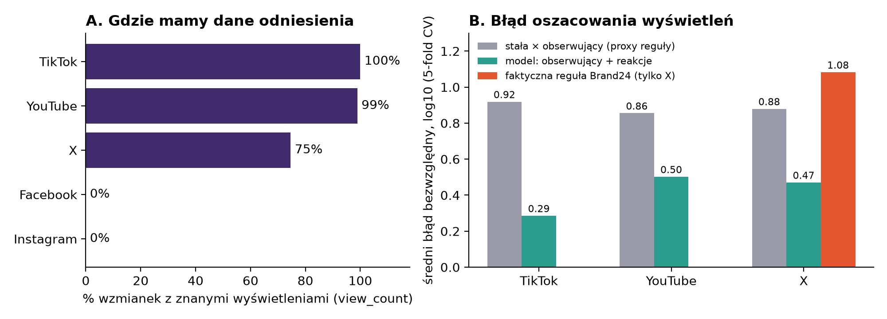
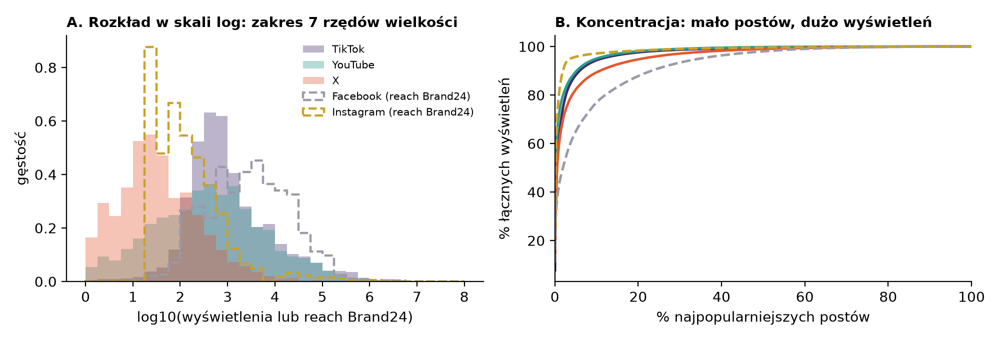

Karta eksploracji danych (M1): estymacja widoczności postów
AMC, PWr · zleceniodawca: Brand24 · zespół i repozytorium: sekcja 7 · stan na 19.10.2026
1. Pytanie badawcze i hipotezy
Pytanie. Na platformach, gdzie znamy liczbę wyświetleń (TikTok, YouTube, X), czy da się oszacować liczbę wyświetleń pojedynczego posta z liczby obserwujących i reakcji (polubienia, komentarze, udostępnienia) dokładniej niż prostą regułą „stała × obserwujący”, i z jaką niepewnością? Co z tego wynika dla Facebooka i Instagrama, gdzie wyświetleń nie ma?
Założenia (jawne). (Z1) Miarą odniesienia jest view_count (wyświetlenia), a nie zasięg w sensie unikalnych odbiorców, którego nie obserwujemy nigdzie. (Z2) Pole b24_estimated_reach nie jest prawdą bazową: na TikToku i YouTube jest równe view_count z konstrukcji (100% i 99% wierszy), a na X, Facebooku i Instagramie jest wyliczane regułą z obserwujących lub reakcji (odtworzoną w sekcji 3). Zgodność z nim nic nie mówi o rzeczywistej widoczności.
| Hipoteza | Co ją obali |
|---|
| H1. Model log(wyświetlenia) ~ log(obserwujący) + log(reakcje) ma mniejszy błąd niż stała × obserwujący na TikToku, YouTube i X. | Błąd modelu (MAE w log10, walidacja czasowa) nie jest mniejszy niż baseline, a przedziały bootstrapu się pokrywają. Wstępnie: nie obalona (sekcja 3). |
| H2. Faktyczna reguła Brand24 na X odbiega od wyświetleń bardziej niż model z H1. | MAE reguły Brand24 ≤ MAE modelu na zbiorze testowym. Wstępnie: nie obalona (1,08 vs 0,47). |
| H3. Relacja wyświetlenia ~ obserwujący + reakcje przenosi się między platformami. | Model uczony na TikToku i YouTube ma na X (jedyny „obcy” test z prawdą bazową) błąd nie lepszy niż baseline. Dla FB i IG hipotezy nie da się zweryfikować. |
2. Źródła danych i zakres próby
- Dane:
data/raw/reach_samples_students.csv od Brand24, 12 500 publicznych wzmianek (po 2 500 z X, Instagrama, YouTube, Facebooka i TikToka), 19 kolumn, 348 marek, język głównie angielski (85%), kraj pusty w 53%. Daty 2025-01 do 2026-10, lecz ok. 85% wierszy z kwietnia–sierpnia 2026.
- Zmienne: odniesienie
view_count; predyktory author_followers, likes, comments, shares, platforma, język, czas; kontekst b24_estimated_reach, sentiment. Pola osobowe (author_name, author_url, url) nie są używane i nie trafią do raportów (RODO).
- Dane zewnętrzne (przegląd): nie znaleziono publicznego zbioru z prawdziwymi wyświetleniami Facebooka ani Instagrama. Dla YouTube'a jest YouNiverse (ICWSM 2021, ok. 72 mln filmów z wyświetleniami i subskrybentami), dla TikToka dane konkursu INFORMS 2024; oba wymagają weryfikacji pól i licencji. Meta Content Library i TikTok Research API są dostępne tylko po wniosku instytucjonalnym. W M1 nie uzupełniamy próby danymi zewnętrznymi.
3. Wyniki wstępnej eksploracji

Rys. 1. A: odsetek wzmianek z wyświetleniami. B: średni błąd bezwzględny oszacowania log10(wyświetlenia), 5-krotna walidacja krzyżowa (losowa, wstępna). Skrypt: src/m1_figures.py pl, liczby: data/processed/m1_numbers.json.

Rys. 2. A: rozkład log10(wyświetleń) dla TikToka, YouTube'a i X oraz log10(reach Brand24) dla FB i IG (linie przerywane, to nie są wyświetlenia). B: jaki odsetek łącznych wyświetleń dają najpopularniejsze posty. Skrypt: src/m1_figures2.py pl.
| platforma | wyświetlenia | obserwujący | reach = views | reach = 0 | ρ Spearmana: views~obserwujący / views~reakcje |
|---|
| TikTok | 100% | 100% | 100% | 0% | 0,43 / 0,87 |
| YouTube | 99% | 100% | 99% | 2% | 0,56 / 0,65 |
| X | 75% | 100% | 1% | 11% | 0,41 / 0,54 |
| Facebook | 0% | 73% | – | 9% | brak views |
| Instagram | 0% | 8% | – | 43% | brak views |
- Rozkłady są silnie prawoskośne (mediana reach 366, średnia 15 652, maksimum ok. 16 mln), więc analizujemy w skali log, medianami i kwantylami. Rys. 2B: 1% najpopularniejszych postów daje 62% (TikTok), 72% (YouTube) i 60% (X) wszystkich wyświetleń, a 10% daje 89–95%. Średnia jest więc myląca, a błąd mierzymy w log10.
- Reguły Brand24 odtworzone z danych (zleceniodawca nie podał stałej): TikTok, YouTube: reach = views. X: 0,1 × obserwujący, gdy brak reakcji, w przeciwnym razie ok. 700 × reakcje (87% wierszy dokładnie). Facebook: max(współczynnik schodkowy × obserwujący, 100 × reakcje), współczynniki 10% / 6% / 5% / 4% / 2% wraz z rozmiarem konta (72% dokładnie, 95% w granicach 2%). Instagram: 20 × (polubienia + komentarze), 98% dokładnie. Wniosek: reach na X, FB i IG jest deterministyczną funkcją tych samych zmiennych, których użyłby nasz model.
- Wstępny test wykonalności (log10, walidacja losowa, n = 2 439 / 2 428 / 1 746 dla TikTok / YouTube / X): stała × obserwujący 0,92 / 0,86 / 0,88; model z reakcjami 0,29 / 0,50 / 0,47. Na X faktyczna reguła Brand24 ma 1,08 (n = 1 639), czyli typowo myli się o ponad rząd wielkości. To jedyne miejsce, gdzie regułę Brand24 da się zestawić z wyświetleniami.
4. Plan pomiaru zjawiska
- Miara:
view_count jako przybliżenie widoczności (Z1). Błąd: MAE i mediana błędu względnego w log10. Niepewność: przedziały predykcji 80% i 90% z regresji kwantylowej kalibrowanej na zbiorze hold-out (alternatywnie conformal) oraz bootstrap dla błędów. Raportujemy pokrycie przedziałów osobno dla każdej platformy.
- Walidacja: podział czasowy (uczenie do marca 2026, test od kwietnia 2026), bo próba jest nierówna w czasie i nie jest wymienialna; losowa CV tylko jako porównanie. Podział według marek, by uniknąć wycieku.
- Modele: baseline 1: stała × obserwujący (mediana ilorazu z treningu); baseline 2: odtworzona reguła Brand24; model: regresja log-log ze splajnem po log(obserwujący) i reakcjami, a jako górna granica gradient boosting.
- Test przenoszenia (H3): uczenie na TikToku i YouTube, test na X (platforma z wyświetleniami, nieużytymi w uczeniu). Dla FB i IG nie ma prawdy bazowej, więc pokazujemy jedynie rozrzut przewidywań modelu względem reguły Brand24, opisany jako porównanie dwóch szacunków, nie błąd.
- Dodatkowe cechy do przetestowania (każda osobno i razem, jako analiza ablacyjna): wiek posta w chwili pomiaru metryk (
metrics_updated_at − created_at), godzina i dzień tygodnia publikacji, język treści, długość treści, sentyment, kraj, marka. Wstępnie (ten sam gradient boosting, błąd w log10): wiek metryk i długość treści obniżają błąd na YouTube z 0,50 do 0,46–0,48, na X z 0,47 do 0,46; na TikToku, a także dla godziny, dnia, języka i sentymentu zmiana jest rzędu 0,00–0,01, czyli praktycznie żadna. Każda cecha z wyższą dokładnością musi się obronić na zbiorze czasowym.
- Próby zdobycia innych danych: (a) sprawdzić pola i licencję YouNiverse (YouTube) i danych INFORMS 2024 (TikTok) jako niezależny zbiór walidacyjny dla modelu views ~ obserwujący + reakcje; (b) zapytać Brand24 o potwierdzenie reguł i o jakiekolwiek posty FB/IG z prawdziwymi wyświetleniami (np. konta klientów, którzy dali dostęp do statystyk); (c) ocenić wniosek o dostęp do Meta Content Library przez uczelnię (mało realne w skali kursu).
- Analizy odporności: rola
metrics_updated_at (wiek metryk), usunięcie skrajnego 1% obserwacji, osobno posty z zerowymi reakcjami, posty z X bez view_count (25%, braki nielosowe).
- Warunek „efektu nie ma”: jeśli błąd modelu nie jest istotnie mniejszy od baseline'u na zbiorze czasowym albo przedziały nie mają deklarowanego pokrycia, piszemy to wprost.
5. Ograniczenia danych i możliwe źródła błędu
Najważniejsze, wprost: na Facebooku i Instagramie nie mamy żadnej prawdy bazowej, a b24_estimated_reach to tam reguła Brand24. Odtworzenie jej nie jest estymacją widoczności. Wnioski o FB i IG będą więc założeniem o przenoszeniu z innych platform, a nie wynikiem zweryfikowanym.
- Konstrukt: wyświetlenia ≠ zasięg unikalnych użytkowników (jedna osoba może wyświetlić wielokrotnie), a klienta interesuje zasięg.
- Okrężność: na TikToku i YouTube reach = views z definicji, więc porównanie z
b24_estimated_reach jest tam puste. Reakcje są częściowo skutkiem wyświetleń, co jest dopuszczalne dla estymacji, ale nie dla wniosków o wpływie.
- Próba: wzmianki o markach wybrane przez Brand24 (nie losowe posty), skok liczebności od kwietnia 2026, 85% angielski, ok. 50% braków kraju. Wnioski dotyczą tej populacji wzmianek.
- Braki: Instagram: obserwujący tylko w 8%, brak
shares, 43% zer; X: 25% bez views; braki zależą od platformy. Nie imputujemy po cichu, raportujemy per platforma.
- Migawka w czasie: metryki mają datę
metrics_updated_at, a młodsze posty mają mniej wyświetleń, niż będą miały docelowo.
- Prawo i etyka: dane publiczne, zgodnie z RODO bez nazw autorów w wynikach. Reguły Brand24 są odtworzone z danych i wymagają potwierdzenia przez zleceniodawcę.
6. Wykonalność do zajęć 5 i stan wiedzy
- Gotowe: notebook EDA (
notebooks/01_eda.ipynb), wstępny test (Rys. 1), odtworzone reguły. Do zajęć 3: codebook (wzmianka organiczna, reklama, spam) i ręczna próbka złota ok. 100 wzmianek z kappą dwóch koderów. Do zajęć 4: pełny pipeline z podziałem czasowym, przedziałami i testem przenoszenia. Do zajęć 5: preprint ≤8 stron i lista własnych słabych punktów na red teaming. Dane są małe (12 500 wierszy), obliczenia trwają sekundy.
- Ryzyko: wynik może okazać się częściowo negatywny (brak walidacji FB i IG). Mieści się to w kryterium oceny kursu.
- Literatura (część sprawdzona tylko po streszczeniach, do weryfikacji przed preprintem): liczba obserwujących słabo przewiduje faktyczny wpływ (Cha i in., ICWSM 2010); logarytmy późniejszych wyświetleń są w przybliżeniu liniowe względem wczesnych (Szabo i Huberman, CACM 2010); engagement względem obserwujących nie jest stały, ma kształt odwróconego U (Wies, Bleier, Edeling, J. Marketing 2023), co uzasadnia schodkowe i nieliniowe stałe; cechy statyczne słabo przewidują dalszy wzrost kaskad (Cheng i in., WWW 2014); ważność przedziałów conformal wymaga wymienialności próbki (Lunde 2023), stąd podział czasowy. Dostęp badawczy do prawdziwego zasięgu istnieje tylko wewnątrz platform lub przez wnioski (Meta Content Library, DSA art. 40). Nie znaleźliśmy recenzowanej pracy o estymacji wyświetleń z samych obserwujących i reakcji na wielu platformach.
7. Zespół i repozytorium
| Rola | Osoba | Zakres |
|---|
| Lead badawczy | [uzupełnić] | pytanie, hipotezy, spójność wniosku |
| Inżynier danych | [uzupełnić] | dane, RODO, data statement |
| Inżynier pipeline'u | [uzupełnić] | codebook, próbka złota, walidacja |
| Inżynier analityk | [uzupełnić] | odporność, wizualizacje, niepewność |
Repozytorium: [wstawić link]. Użycie AI (przegląd literatury i danych, kod wykresów, szkic karty) ujawniamy; logi sesji prowadzimy lokalnie i udostępnimy na żądanie.